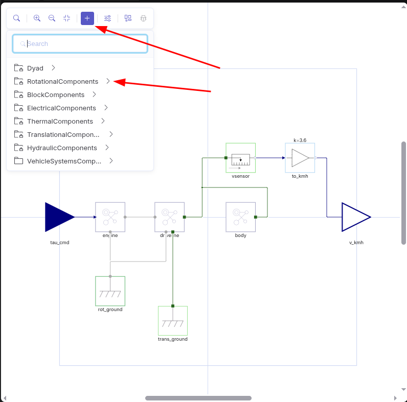
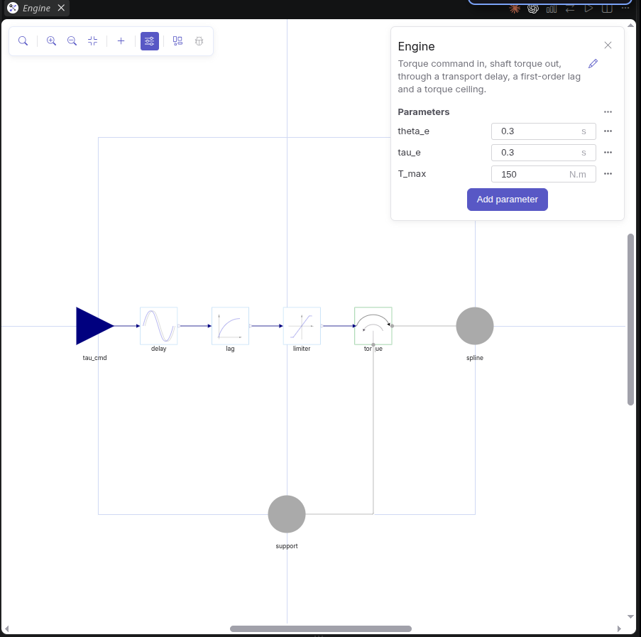
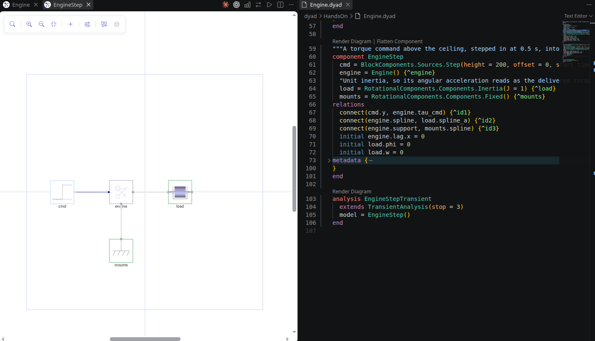
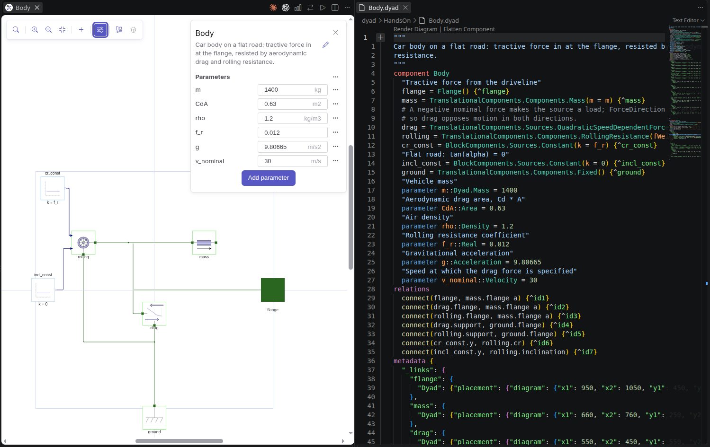
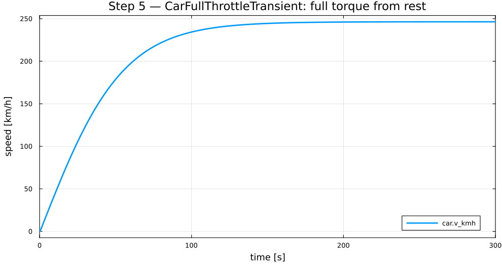
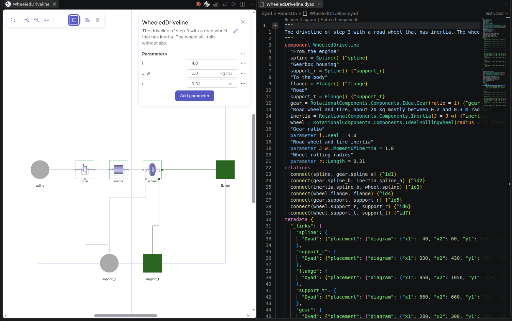
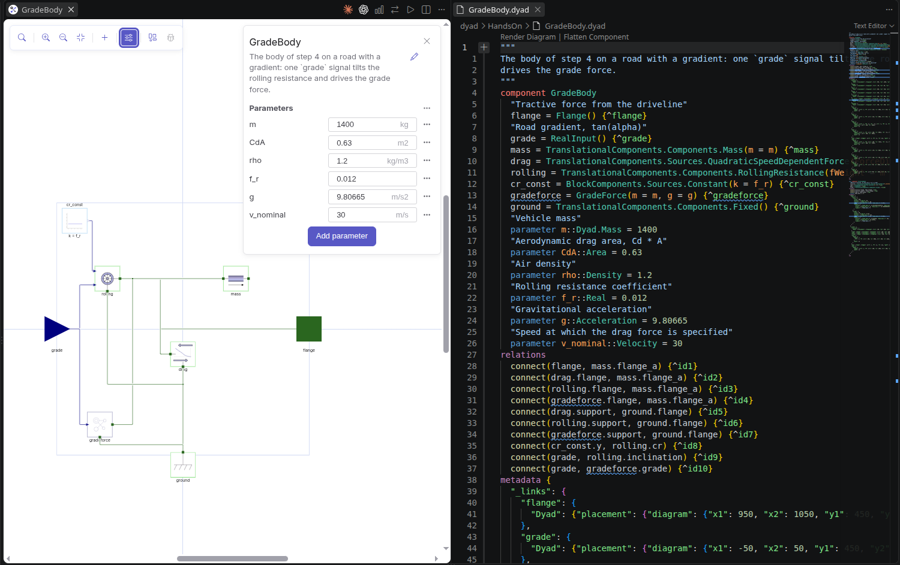
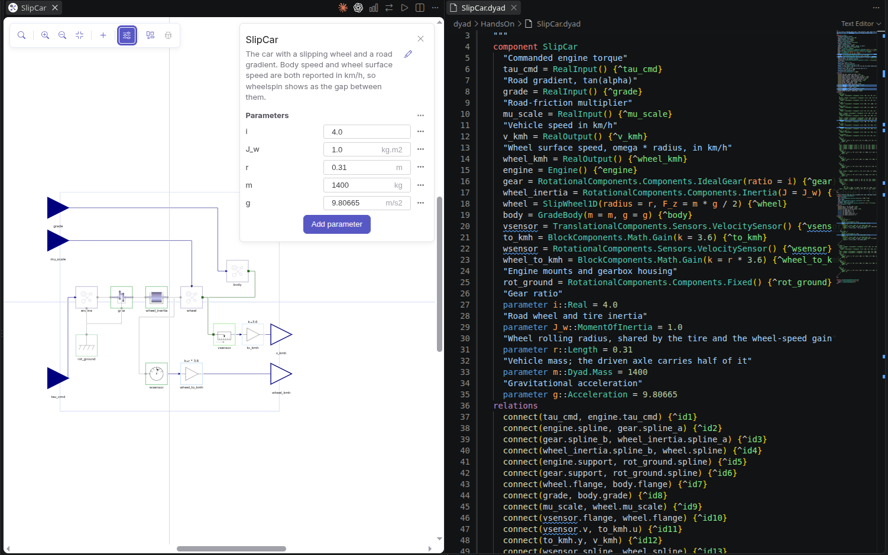

Build the car in Dyad
Lecture 1 hands-on
Vehicle Systems & Components
From an empty library to a wheel spinning on a slippery road.
S speaker view · C cue panel · O overview · ← → steps · ↑ ↓ within a step
Why we are here
You set cruise control to 90 km/h. A hill comes. The car slows down — a little — and then it is back at 90.
Something measured the speed, decided it was too low, and pressed the pedal harder. That something is a controller, and designing it is what this course is about.
How hard to press? How long before the car answers? What if the road is icy?
So before any controller, we build the car: each part explained first, then built and tested in Dyad.
What we are building today
Today
| # | Step | Min | You end with |
|---|---|---|---|
| — | Why, what, and your library | 25 | an empty MyCar library |
| 01 | Tour, and two kinds of wire | 13 | two blocks, one wire, two views |
| 02 | Engine | 27 | torque with a delay, a lag and a ceiling |
| 03 | Driveline | 13 | gear and rolling wheel |
| 04 | Body | 21 | mass, drag, rolling resistance |
| 05 | Car | 27 | 246 km/h flat out — the number from paper |
| 06 | Wheel inertia | 12 | a spinning wheel that barely matters |
| 07 | Grade | 13 | your first equation |
| 08 | Tire curve | 20 | grip against slip |
| 09 | Slip wheel | 15 | a wheel that can spin |
| 10 | Standing start | 23 | wheelspin on ice |
Four words to describe any system
- Input u — what we choose to change. The pedal.
- Disturbance d — what changes it without asking. Hills, wind, luggage, ice.
- State x — what it remembers from one moment to the next. How fast it is going.
- Output y — what we can measure. The speedometer.
Three ideas before you click anything
- A library is a folder.
dyad/holds your.dyadfiles;generated/is the Julia the extension writes from them — never edit it. - Component = what the system is. Parts, wires, equations.
- Analysis = what to do with it. "Simulate this for 300 s."
- Diagram and code are one file. A block is a line; a wire is a
connect.
Page: What you are looking at
Causal and acausal modeling
Causal — block diagrams
Every block has fixed inputs and outputs: speed in, force out. You decide what is computed from what, and rearrange the physics by hand to fit. A damper driven by force instead of speed is a different block.
Simulink, most control tools.
Acausal — physical parts
Each part states its physics as equations, not assignments. Connecting parts adds more equations. Dyad works out what to compute from what, so the same damper works whichever side drives it.
At every joint: speeds are equal, forces add up to zero.
Dyad, Modelica.
What Dyad does when you press ▷
- Collect equations. Every part's equations, plus two for every joint: equal speeds, forces summing to zero.
- Check: equations = unknowns. A model that is not balanced does not compile. A dangling input is one unknown too many — the reason for test benches.
- Simplify. Symbolic algebra removes trivial equations (a = b) and solves for the derivatives. Left: a set of differential equations in the states only, $$ \dot x = f(x, u, t) $$
- Solve in time. From the start state, a solver steps forward, $$ x(t+\Delta t) \approx x(t) + \Delta t\, f(x, u, t) $$ choosing Δt itself — small where things change fast.
The car body, step 04
Unknowns: v, Fdrag, Froll. Equations:
$$ F_{\text{drag}} = 0.378\, v^2 $$ $$ F_{\text{roll}} = 165\ \text{N} $$ $$ 1400\,\dot v = F - F_{\text{drag}} - F_{\text{roll}} $$
3 equations, 3 unknowns. After simplification, one state:
$$ \dot v = \frac{F - 0.378\,v^2 - 165}{1400} $$
Where things are

Adding a part

- + (Add component) in the diagram toolbar.
- Search by name —
PadeDelay— or walk the path the parts table gives:BlockComponents › Nonlinear › PadeDelay. Dyadholds the ports:RealInput,Spline,Flange.- Your own library is at the bottom — that is where your
Enginewill appear when the car needs it. - The sliders button: Edit Parameters.
Create your library
- Ctrl+Shift+P → Dyad: Create Component
Library → name it
MyCar, pick an empty folder. - Wait: the extension runs
Pkg.instantiate()by itself. The first time it downloads and precompiles the standard libraries — minutes, not seconds. - Dyad sidebar → Components:
MyCaris there.
MyCar is in the
Components panel.
Page: Create your library
Step 01 · 13 min
One model, two views
Place two blocks, wire them, set a parameter — then see the same three facts as code.
What you are building

delay (PadeDelay: n = 6, m = 5, delayTime = 0.3) → lag
(FirstOrder: T = 0.3), one wire delay.y → lag.u⇄ — the same three facts
component Engine
delay = BlockComponents.Nonlinear.PadeDelay(n = 6, m = 5, delayTime = 0.3)
lag = BlockComponents.Continuous.FirstOrder(T = 0.3)
relations
connect(delay.y, lag.u)
end- Every block is a line
name = Library.Path(parameters). - Every wire is a
connectunderrelations. - Change
T = 0.3to0.5here, toggle back: the panel shows 0.5.
Two kinds of wire
A signal: a number
It goes one way, like an arrow. One block works out a number; the next block reads it.
Examples today: the torque you ask for, the km/h on the speedometer, how slippery the road is.
A mechanical joint: physics
No arrow. Two parts bolted together. Dyad then knows two facts:
- they move together — same position, same speed;
- they push each other equally — the forces add up to zero.
Step 02 · 27 min
Engine
Torque command in, shaft torque out — late, slow, and never more than 150 N·m.
What happens when you press the pedal
- Late. For 0.3 s nothing happens: the engine computer reacts, fuel is injected, a cylinder fires. → delay block
- Slow. Then torque grows, quickly at first and then more gently, as air fills the engine. → lag block
- Limited. It never goes above 150 N·m, and never below 0 — this engine cannot brake. → limiter block
A fourth block, the torque source, turns the number into a real twist on the shaft.
The lag: closing a gap
In words: the torque moves toward the request, and the bigger the gap, the faster it moves. As an equation:
$$ \tau_e\,\frac{dT}{dt} \;=\; T_{\text{req}} - T $$
τₑ = 0.3 s — the engine's time constant
(tau_e): how long the intake manifold takes to fill. Not the same as the
0.3 s delay θₑ before it.
A gap that shrinks in proportion to itself shrinks exponentially:
$$ T(t) \;=\; T_{\text{req}}\,\big(1 - e^{-t/\tau_e}\big) $$
| time since it started | share of the way |
|---|---|
| 1 × τₑ = 0.3 s | 63 % |
| 2 × τₑ = 0.6 s | 86 % |
| 3 × τₑ = 0.9 s | 95 % |
Working out the step-02 plot before you make it
Request 200 N·m at t = 0.5 s. Delay 0.3 s, lag τₑ = 0.3 s, limit 150 N·m.
When does it start?
0.5 s + 0.3 s delay
How much at 1.0 s?
0.2 s into the lag:
200 × (1 − e−0.2/0.3)
= 200 × (1 − 0.513)
When does it hit 150?
200 × (1 − e−t′/0.3) = 150
e−t′/0.3 = 0.25
t′ = 0.3 × ln 4 = 0.42 s
From two blocks to an engine

Engine as step 01 — add 3 parameters, limiter, torque, and 3 ports on the outlineEvery push needs something to push against
An engine twists its shaft — and twists its mounts the other way. A wheel pushes the car forward — and pushes the road backward. That is Newton's third law.
- In Dyad, the "other side" is a
supportport. It must end at aFixedblock: the ground, the car's frame. - Forget it, and Dyad says the system is unbalanced: it has a force with nowhere to go.
- Sign rule: a force counts as positive when it pushes into a block. So a tire pushing the car forward shows up as a negative force at its port.
Step 03 — the gear and wheel bring their supports out.
Step 05 — the car connects them to ground.
Step 09 — the tire's minus sign.
Finish the chain, then build a bench
Parameters theta_e = 0.3 (structural), tau_e = 0.3,
T_max = 150 — the parts use the names.
tau_cmd → delay → lag →
limiter (y_max = T_max, y_min = 0) → torque →
spline; torque.support → support.
Bench EngineStep: a Step of 200 N·m at
0.5 s into your Engine, a 1 kg·m² Inertia on the shaft,
the mounts Fixed.

Initial state in code, analysis with ▷
component EngineStep
cmd = BlockComponents.Sources.Step(height = 200, offset = 0, start_time = 0.5)
engine = Engine()
"Unit inertia, so its angular acceleration reads as the delivered torque"
load = RotationalComponents.Components.Inertia(J = 1)
mounts = RotationalComponents.Components.Fixed()
relations
connect(cmd.y, engine.tau_cmd)
connect(engine.spline, load.spline_a)
connect(engine.support, mounts.spline)
initial engine.lag.x = 0
initial load.phi = 0
initial load.w = 0
end
analysis EngineStepTransient
extends TransientAnalysis(stop = 3)
model = EngineStep()
end- New component
EngineStep(Components → right-click MyCar → Add Component), draw the bench. - ⇄ to code, add the three
initiallines. Save. - New analysis: ▷ Run Analysis in the title bar → TransientAnalysis → model already assigned. Name it
EngineStepTransient,stop = 3. - ▷ beside it in Analyses runs it.
Plot one signal, not all of them
using MyCar, Plots
r = MyCar.EngineStepTransient()
plot(r; idxs = r."engine.limiter.y")
A delay the computer can handle
A true delay must remember the whole last 0.3 s of the pedal, to replay it later. A simulator cannot store that; it only tracks a handful of numbers that change smoothly.
So Dyad uses a stand-in, PadeDelay: six of those numbers,
tuned so that together they behave almost exactly like a 0.3 s delay.
theta_e, the delay, is a structural parameter: change it
and Dyad rebuilds the model.
Why keep the delay and the lag at all?
Without them, the torque appears the instant you ask for it. Then:
- the car becomes too easy to control — any controller works, and there is nothing to learn;
- the two tuning methods in the next lecture (Ziegler–Nichols, Cohen–Coon) cannot be used at all;
- real cars are not like that: every real engine is late and slow.
Step 03 · 13 min
Driveline
Shaft torque in, force on the car out: F = T · i / r.
From a twist to a push: F = T · i / r
Step 1 — the gear multiplies the twist
The engine turns i = 4 times for every turn of the wheel. Like a low bicycle gear: easier to turn, so the wheel gets 4 × the torque (and turns 4 × slower).
$$ T_{\text{wheel}} = i \cdot T $$
Step 2 — the wheel turns the twist into a push
Torque is force times lever arm. At the road the lever arm is the wheel radius r, so Twheel = F · r:
$$ F = \frac{T_{\text{wheel}}}{r} = \frac{T\,i}{r} $$
With i = 4.0 and r = 0.31 m
| engine | × 4 | ÷ 0.31 m |
|---|---|---|
| 100 N·m | 400 N·m | 1290 N |
| 150 N·m | 600 N·m | 1935 N |
1290 N on 1400 kg, nothing else acting: a = F/m = 0.92 m/s² — step 03's check.
Speeds go the other way
Wheel speed = v / r; engine speed = i × that. At 90 km/h: 25 m/s ÷ 0.31 × 4 = 323 rad/s = 3080 rpm.
Gear, rolling wheel, four ports

i = 4.0, r = 0.31 · gear IdealGear(ratio = i) → wheel IdealRollingWheel(radius = r) ·
gray circles are rotational ports, green squares translationalStep 04 · 21 min
Body
1400 kg, and the two forces that hold it back on a flat road.
Four forces on the car
Air drag, and why it grows with speed squared
Speed enters twice:
- How much air. Each second the car's front (area A) moves v meters forward and pushes away the air in front of it. Twice as fast → twice as much air per second.
- How hard. Each kilogram of that air is pushed to roughly the car's speed v. Twice as fast → each kilogram pushed twice as hard.
$$ F \;\sim\; \underbrace{\rho A v}_{\text{kg of air per second}}\cdot\underbrace{v}_{\text{speed given to it}} \;=\; \rho A v^2 $$
Double the speed: twice the air, each kilogram pushed twice as hard, so the drag is 2 × 2 = 4 times bigger. The measured shape factor Cd and the ½ account for air that flows around the car instead of being carried along:
$$ F_{\text{drag}} = \tfrac12\,\rho\,C_dA\,v^2 = 0.378\cdot v^2 $$
ρ = 1.2 kg/m³ air density. CdA = 0.63 m², the car's frontal area times a shape factor. ½·1.2·0.63 = 0.378.
| speed | m/s | drag |
|---|---|---|
| 30 km/h | 8.3 | 26 N |
| 90 km/h | 25.0 | 236 N |
| 130 km/h | 36.1 | 493 N |
Rolling resistance, and the 500 N check
Rolling resistance is a fixed share of the weight pressing on the tires:
$$ F_{\text{roll}} = f_r\,m\,g = 0.012 \times 1400 \times 9.81 = 165\ \text{N} $$
It does not depend on speed. In the model, RollingResistance
takes the weight m·g as a parameter, and fr and the road slope as
signals — so a hill can arrive in the middle of a run.
Step 04's check: push with 500 N
The car speeds up until drag + rolling = 500 N:
0.378·v² + 165 = 500
0.378·v² = 335
v² = 886 → v = 29.8 m/s
Mass, drag, rolling resistance

The one parameter that bites
parameter m::Dyad.Mass = 1400
parameter CdA::Area = 0.63
parameter rho::Density = 1.2
parameter v_nominal::Velocity = 30
…
drag = QuadraticSpeedDependentForce(ForceDirection = false,
v_nominal = v_nominal, f_nominal = -0.5 * rho * CdA * v_nominal ^ 2)
rolling = RollingResistance(fWeight = m * g)- Each value is a parameter of
Body; the parts use the names. - The block knows drag as one point on its curve — force
f_nominalat speedv_nominal— and scales by (v / vnominal)². Withf_nominal= ½ρCdA·vnominal², vnominal cancels: any value gives the same drag; 30 m/s is just a reference. - Negative makes the source a load rather than a push.
ForceDirection = falsemakes it oppose motion both ways.
Step 05 · 27 min
Car: full throttle to terminal speed
Your three components, assembled — and the 246 km/h you computed on paper.
Adding it all up: the force balance
Newton's second law: mass × acceleration = sum of all forces.
$$ \underbrace{m\,\frac{dv}{dt}}_{\text{speeding up}} \;=\; \underbrace{\frac{T\,i}{r}}_{\text{push}} \;-\; \underbrace{\tfrac{1}{2}\rho\,C_dA\,v^2}_{\text{air}} \;-\; \underbrace{f_r\,m\,g\cos\alpha}_{\text{tires}} \;-\; \underbrace{m\,g\sin\alpha}_{\text{slope}} $$
Read it as a budget: the push comes in, the three resistances take their share, and what is left speeds the car up. If nothing is left, the speed is steady.
The car, in nine numbers
| What | ||
|---|---|---|
| mass m | 1400 | kg |
| drag area CdA | 0.63 | m² |
| air density ρ | 1.2 | kg/m³ |
| rolling coefficient fr | 0.012 | — |
| wheel radius r | 0.31 | m |
| gear ratio i | 4.0 | — |
| max engine torque Tmax | 150 | N·m |
| engine lag τe | 0.3 | s |
| engine delay θe | 0.3 | s |
Where you type each one
Engine— Tmax, τe, θe (step 02)Driveline— i, r (step 03)Body— m, CdA, ρ, fr (step 04)
Top speed: when the push runs out
At top speed the car no longer speeds up: dv/dt = 0. The force balance (flat road) becomes push = air + tires:
- Most push: 150 × 4 / 0.31 = 1935 N
- Tires take: 165 N. Left for the air: 1935 − 165 = 1770 N
- Air: 0.378 · v² = 1770 → v² = 4683
- v = √4683 = 68.4 m/s × 3.6 = 246 km/h
The same idea, at cruise
To hold a speed, push = air + tires. Then turn the push back into engine torque: T = F · r / i.
| hold | air | + tires | = push | torque |
|---|---|---|---|---|
| 90 km/h | 236 | 165 | 401 N | 31.1 N·m |
| 110 km/h | 353 | 165 | 518 N | 40.1 N·m |
The next lecture opens with these two: they are its first experiment, and the answer its controller has to find on its own.
How long does it take to get there?
Near any speed, the car behaves like step 02's lag: if it goes a little faster, drag grows a little and pulls it back. How fast it pulls back sets its time constant:
$$ \tau_{\text{car}} = \frac{m}{\text{extra drag per extra m/s}} = \frac{m}{2 \cdot 0.378 \cdot v} $$
Extra drag per extra m/s at 100 km/h (27.8 m/s): drag is 0.378 × 27.8² = 292 N; 1 m/s faster it is 0.378 × 28.8² = 313 N — about 21 N more. In general the slope of v² is 2v, so it is 2 × 0.378 × v = 21 N per m/s.
Those 21 N per m/s pull a too-fast car back, like the lag closing its gap: τ = 1400 / 21 = 67 s.
That is 200 times slower than the engine's 0.3 s. The car itself is the slow part.
Step 05, predicted
Assemble from your own library

Engine, Driveline, Body from + → MyCar ·
VelocitySensor → Gain(k = 3.6) → v_kmh · two groundsNew bench, new analysis, run
component CarFullThrottle
"Full throttle: the engine's 150 N·m ceiling"
cmd = BlockComponents.Sources.Constant(k = 150)
car = Car()
relations
connect(cmd.y, car.tau_cmd)
initial car.body.mass.s = 0
initial car.body.mass.v = 0
initial car.engine.lag.x = 0
end
analysis CarFullThrottleTransient
extends TransientAnalysis(stop = 300)
model = CarFullThrottle()
end246 km/h — the car on paper
using MyCar, Plots
r = MyCar.CarFullThrottleTransient()
plot(r; idxs = r."car.v_kmh")
246 km/h is wrong — and that is fine
- At 246 km/h the engine would spin at 8400 rpm (step 03). A real one gives much less there, so the real top speed is lower.
- Between 90 and 130 km/h — where the next lecture drives — the two agree. There the model is good.
- Fixing the top end means a torque curve: lecture 2.
Red: the usual shape of a petrol engine, drawn for comparison — not measured. Blue: exactly what our engine block computes.
Step 06 · 12 min
A wheel with inertia
A 1 kg·m² wheel between gear and road — and how little it changes.
The wheel's hidden mass
To speed up the car, the engine must also spin up the wheels. That costs energy, as if the car were a little heavier.
Energy of a spinning wheel, with ω = v / r:
$$ \tfrac12 J\omega^2 \;=\; \tfrac12 J\frac{v^2}{r^2} \;=\; \tfrac12\,\underbrace{\Big(\frac{J}{r^2}\Big)}_{\text{extra mass}}\,v^2 $$
That is exactly the energy of a mass J/r² moving at speed v.
Step 06: a wheel with J = 1 kg·m²
1 / 0.31² = 1 / 0.096 ≈ 10 kg extra on a 1400 kg car: 0.7 % heavier.
Duplicate, insert, compare

inertia Inertia(J = J_w), new parameter J_w = 1.0using MyCar, Plots
a = MyCar.CarFullThrottleTransient()
b = MyCar.WheeledCarFullThrottleTransient()
p = plot(a; idxs = a."car.v_kmh", label = "Car")
plot!(p, b; idxs = b."car.v_kmh", label = "WheeledCar")J / r² ≈ 10 kg

Step 07 · 13 min
A road with a gradient
Your first equation: the pull of gravity along the slope.
The slope: part of the weight pulls back
Angle exaggerated (30°); a 10 % hill is only 5.7°.
- along the road: m·g·sin α — pulls the car back;
- into the road: m·g·cos α — presses the tires down.
What "10 %" means. A road sign gives rise ÷ run: 10 m up for every 100 m across. Rise ÷ run is tan α, so tan α = 0.10 → α = 5.7°, sin α = 0.0995.
$$ F_{\text{slope}} = m\,g\,\sin(\arctan 0.10) = 1366\ \text{N} $$
No library part turns a slope into a force: step 07 is your first equation.
One equation
component GradeForce
extends TranslationalComponents.Interfaces.PartialForce
grade = RealInput()
parameter m::Dyad.Mass = 1400
parameter g::Acceleration = 9.80665
relations
f = m * g * sin(atan(grade))
end- Add Component, then ⇄ — an equation has no diagram form.
extends PartialForcebrings the ports andf; you write only whatfis.gradeis tan α — the same conventionRollingResistanceuses, so one signal drives both.
extends: reuse, then flatten to see it all
extends X copies everything X declares —
ports, variables, equations — into your component. Each level adds a little:
PartialElementaryOneFlangeAndSupport2: portsflange,support; s = flange.s − support.s; support.f = −flange.f (the push-back).PartialForce: a variablef, with f = flange.f. Its one gap: whatfis.GradeForce, yours: fills the gap with one equation.
Same idea in every analysis: extends TransientAnalysis(stop = 300)
inherits the solver set-up; you only set what differs.
component GradeForce
flange = Flange() # from …Support2
support = Flange() # from …Support2
grade = RealInput()
variable s::Length # from …Support2
variable f::Dyad.Force # from PartialForce
parameter m::Dyad.Mass = 1400
parameter g::Acceleration = 9.80665
relations
s = flange.s - support.s # …Support2
support.f = -flange.f # …Support2
f = flange.f # PartialForce
f = m * g * sin(atan(grade)) # yours
endIn the code view, click Flatten Component above the
component line to see this for any model.
Give the body a grade input

Body → GradeBody · delete incl_const ·
one grade input into rolling.inclination and gradeforce.grade ·
GradeForce(m = m, g = g)Step 08 · 20 min
Tire friction against slip
Grip peaks at 4 % slip and falls once the tire slides.
Until now, the wheel could not slip
Steps 03 to 07 use an ideal rolling wheel: one turn of the wheel always moves the car exactly one wheel-circumference. Wheel and car can never disagree.
Slip, and how grip depends on it
Slip κ: how much faster the tire surface moves than the car, as a share of the car's speed.
$$ \kappa \;=\; \frac{\omega r - v}{v} $$
Car at 10 m/s, tire surface at 10.4 m/s: κ = 0.4 / 10 = 0.04, i.e. 4 % slip.
Grip μ: the share of the load on the tire, Fz, that it can turn into a push:
$$ F_x \;=\; \mu(\kappa)\cdot F_z $$
Normal driving is the rising part. Cruising at 100 km/h needs 457 N of the tire's 6865 N load: μ = 0.07, slip about 0.2 %. Even flat out, μ = 0.28 and slip under 1 %. The peak at 4 % is reached only when the wheel starts to spin or lock.
How the curve is built: three pieces
One building block, an S-shaped cubic:
$$ h(x) = 1.5\,x - 0.5\,x^3 $$
It goes from −1 to 1 as x goes from −1 to 1, and its slope, 1.5 − 1.5x², is zero at both ends. So pieces built from it join without corners.
- Rise, 0 → 0.04: μ = μA·h(κ / 0.04). Flat top exactly at the peak, μA = 1.0.
- Fall, 0.04 → 0.12: the same h, stretched to that range, taking μ from 1.0 down to μS = 0.7. Halfway, κ = 0.08: μ = 0.85.
- Slide, beyond 0.12: μ = 0.7, constant.
Braking: μ = sign(κ) · μ(|κ|), so the curve is mirrored.
κ in, μ out
- Rises to μA = 1.0 at κ = 0.04 (adhesion).
- Falls to μS = 0.7 beyond κ = 0.12 (sliding).
- Each segment is a cubic with zero slope at its ends — no corners for the solver.
- Point-symmetric: braking slip gives negative friction.
using MyCar, Plots
r = MyCar.TireFrictionCurveSweep()
plot(r; idxs = (r."curve.kappa", r."curve.mu"))
Step 09 · 15 min
A wheel that can slip
Cut the rolling constraint: wheel and car may now move at different speeds.
Slip, grip, force
kappa = (omega * radius - v) / max(abs(v), v_eps)
curve.kappa = kappa
mu = mu_scale * curve.mu
F_x = mu * F_z
flange.f = -F_x
0 = spline.tau + radius * flange.fv_epskeeps κ finite at standstill.mu_scaleis the road: 1 dry, 0.2 slippery.- Flow is positive into a component: a tire pushing the car forward reports
flange.f = -F_x.
What you are building

Step 10 · 23 min
Standing start on a slippery road
Floor it on ice: the wheel spins, the car barely moves.
Two limits: the engine's and the tire's
The driven wheels carry half the car: Fz = 1400 × 9.81 / 2 = 6865 N. The most the tire can push is μpeak × Fz:
| limit | N at the road |
|---|---|
| engine, flat out (step 03) | 1935 |
| tire, dry: 1.0 × 6865 | 6865 |
| tire, snow: 0.2 × 6865 | 1373 |
| tire, ice: 0.05 × 6865 | 343 |
Dry: the engine runs out first; the tire stays left of its peak. Snow: the tire runs out first; the engine keeps pushing and drives the wheel past the peak.
Step 10, predicted — full power from a stop
Two speeds out

v_kmh from the body · wheel_kmh from the wheel shaft,
× r × 3.6 · tire radius = r, F_z = m * g / 2 · bench: cmd 150, road 0, friction 0.21500 km/h at the tire, 10 km/h on the road
using MyCar, Plots
r = MyCar.SlipCarStandingStartTransient()
plot(r; idxs = [r."car.v_kmh", r."car.wheel_kmh"])
dry = MyCar.SlipCarStandingStartTransient(
model = MyCar.SlipCarStandingStart(
name = :SlipCarStandingStart, friction__k = 1.0))
plot(dry; idxs = [dry."car.v_kmh", dry."car.wheel_kmh"])
Every number you predicted, and hit
| Step | You build | Your run should show | Worked out in |
|---|---|---|---|
| 02 | Engine | 0 until 0.8 s · 97 N·m at 1.0 s · 150 N·m from 1.22 s | step 02 |
| 03 | Driveline | 100 N·m → 1290 N → 0.92 m/s² on 1400 kg | step 03 |
| 04 | Body | 500 N push settles at 29.78 m/s | step 04 |
| 05 | Car | 246.39 km/h at 300 s · 100 km/h at 23.6 s | step 05 |
| 06 | Wheel inertia | 23.8 s to 100 km/h · terminal speed unchanged | step 06 |
| 07 | Grade | 1366 N on a 10 % climb | step 07 |
| 08 | Tire curve | μ = 1.0 at κ = 0.04, 0.7 beyond 0.12 | step 08 |
| 09–10 | Slip wheel, car | snow: car 10 km/h, wheel 1500 km/h · dry: 21 km/h together | step 10 |
What you built, and what comes next
- A car, from an empty library: engine → gear and wheel → body → speedometer.
- Every block stands for one term of the physics, explained before you placed it.
- Every number it produced, you predicted first.
- And a tire with a peak — the reason the car crawls on snow.